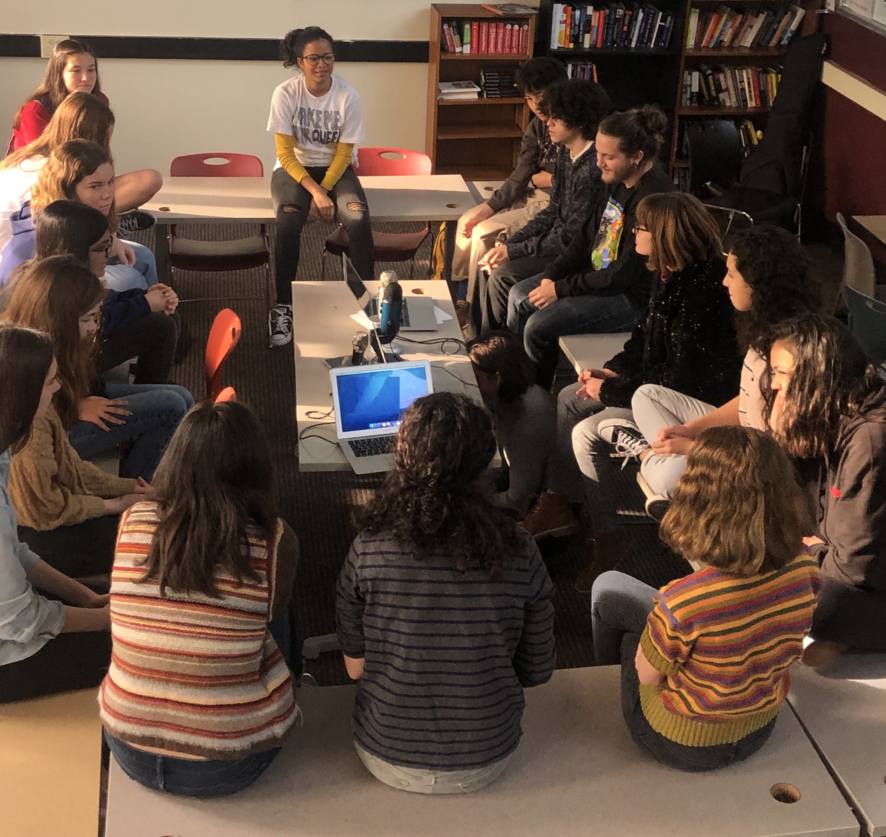
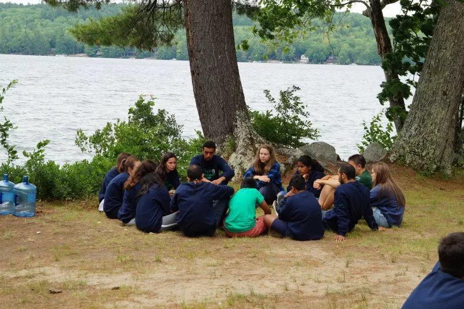
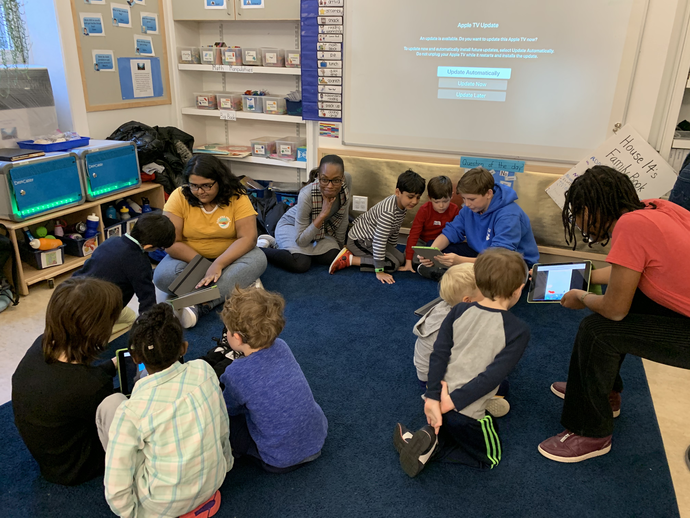
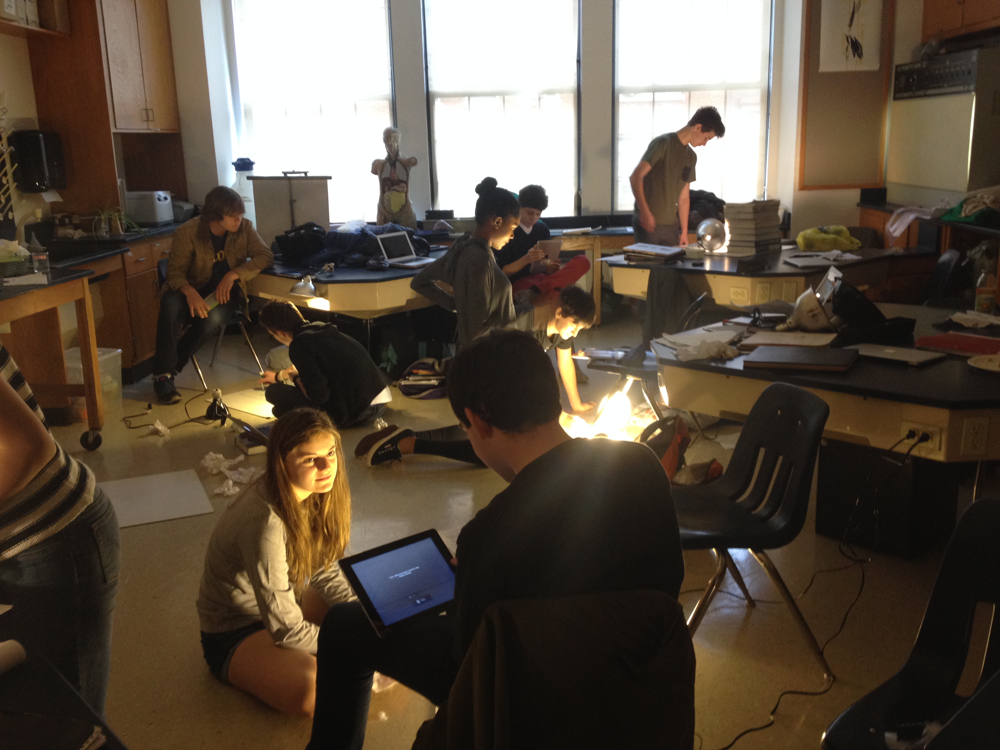

Centering Student Voices to Build Community and Agency
Creating club contexts in classrooms inspired by
This Teenage Life
Part 1: The Why & What
With their zest, fresh perspectives, vivacity, and transgressiveness, young people can do some of the most original and creative work.
Engaging in personally-driven meaningful projects with a real audience can help young people
1) become the people they want to be
2) connect with others in deep ways
As educators, how do we support this kind of connection and transformation? Why is this particularly important right now?
Who am I and what am I/we doing?
Clip from HTH Unboxed, start at 6m16s
How it started: The Team

TTL's Audience


Part 2: How did I/we get here
The Power of Dialogue & Projects
Seeing the power of dialogue

Seeing the power of projects...
Doing my own projects
Listening to young people
Transitioning from PBL to real projects WITH young people
*real = real audience & starting with project > content
Part 3: Educational Framing
Centering the "periphery"
Excerpt from In Search of Deeper Learning:
Some grammar of "The Periphery"
Creating contexts that feel less like classes and more like clubs
- Opt-in & Young People Driving
- Educator as co-creator/ mentor
- Responsive Time
- Real Audience & Exhibition of work
- Authentic "Assessment"
- Equity as Expression, Interest, & Divergence
1. Educator as Mentor/Co-creator
Centering people > Content
After interviewing my students from 10 years ago, about what they remember from 9th grade bio class, I learned...
The affective & relational is remembered more than any specific content
2. Opt-in & Young People Driving
- Start a TTL conversation club in your school or in your class
- Do something with our student-run blog
- Within Class Assignments — evocative examples of enabling choice/divergence
- YP pitch their projects (form and topic) within themes (e.g. theme: power & form: article in zine, blog post, etc)
- YP define what success looks like individually and grading based on external perameters (e.g. does it work?)
- Book and reading clubs created used to produce podcast, adaptations, fan fiction etc.
Examples
- Healey Programs and adaptations films
- Tara, Julie, Katie websites
4. Responsive Time
- studio time
- YP set goals and deadlines within paramaters
- Ask YP how much time they need for something and how you can help
5. Real Audience & Exhibition of work
Within rules of district/school publish work for exhibition outside in beyond-school context — print, website, Spotify, invite parents, YP from younger or older grades, outside organizations into your class?

Learning from Periphery w TTL as model
(e.g. Reelize )

Learning from Periphery w TTL as model
Time for large or small group "bonfire" stories and conversations